Booker
The Brave Little Learner
LEARNConfidence
Early literacy, storytelling, listening, and the courage to try again.
Zone: Booker's Reading Area
Four plush-and-felt friends share the Clubhouse. Each looks after one learning pillar and practices one value.


Early literacy, storytelling, listening, and the courage to try again.
Zone: Booker's Reading Area
Naming feelings, calming down, friendship and making room for everyone.
Zone: Lumi's Calm Corner
Questions, nature, numbers, shapes and simple experiments.
Zone: Zuri's Discovery Zone
Movement, music, routines, clean-up and doing it myself.
Zone: Bop's Movement Zone
Story-world animation to watch with a grown-up, then try it together. Every video is on Watch together.
[Title card] Futures Friends. Read along: Brave Reader Steps. Read along with Booker.
Booker: Hi, friends! I'm Booker.
Booker: A new word? Let's be brave readers!
[On screen: a word card with a red kite picture from Booker's book, the word KITE in big letters and kite in small letters under it.]
Booker: First, look at the picture for a clue.
[Step 1, Look at the picture: the kite picture lights up. Clue!]
Booker: Say the first sound... kuh, kuh, kuh.
[Step 2, Say the first sound: the letter K lights up, with /k/ under it.]
Booker: Slide your finger, slow as honey.
[Step 3, Slide your finger: a paw slides under K, I, T, E. K, I and T light up as their sounds appear: /k/ ... /ī/ ... /t/. The E stays pale: the e is quiet.]
Booker: Kite!
[Step 4, Read the word: the whole word KITE lights up.]
Booker: Not quite? That's okay.
Booker: Big breath. Brave heart. I can try again!
[On screen: Big breath. Brave heart. I can try again!]
[End card] Brave reading, friends! Learn. Move. Explore. Belong. A Futures Friends play-along video.
[Title card] Futures Friends. Sound game: First-Sound Hunt. with Booker.
Booker: Hi, friends! I'm Booker.
Booker: Let's go on a sound hunt! Listen...
Booker: Sss... sss... sun!
Booker: Now a new sound. T... t... tree!
Booker: F... f... flower!
Booker: Your turn! Pick a sound and hunt at home!
[End card] Great listening, friends! Learn. Move. Explore. Belong. A Futures Friends play-along video.
Booker: You can watch first.
[Title card] Futures Friends. Calm corner: Smell the Flower, Blow the Candle. Breathe with Lumi.
Lumi: Hi, friends. I'm Lumi.
Lumi: When feelings get big, we can breathe together.
Lumi: Here's my flower... and my candle.
Lumi: Smell the flower...
Lumi: Blow the candle...
Lumi: How does your body feel now?
[End card] Calm breathing, friends! Learn. Move. Explore. Belong. A Futures Friends play-along video.
[Title card] Futures Friends. Feelings: Feeling Faces. with Lumi.
Lumi: Hi, friends. I'm Lumi.
Lumi: Let's make feeling faces. Copy me!
Lumi: Happy!
Lumi: Sad.
Lumi: Surprised!
Lumi: Sleepy...
Lumi: Every feeling is okay.
[End card] Great faces, friends! Learn. Move. Explore. Belong. A Futures Friends play-along video.
[Title card] Futures Friends. Kind words: Look, Listen, Lend a Hand. with Lumi.
Lumi: Hi, friends. I'm Lumi.
Lumi: When a friend is all alone, here's what we do.
Lumi: Look.
Lumi: Listen.
Lumi: Lend a hand.
Lumi: Do you want to play with me?
Lumi: Yes!
Lumi: Look. Listen. Lend a hand.
[End card] Kind words, friends! Learn. Move. Explore. Belong. A Futures Friends play-along video.
[Title card] Futures Friends. Wonder time: Zuri’s Wonder Loop. Explore with Zuri.
Zuri: Hi, friends! I'm Zuri.
Zuri: Notice. What do you see?
Zuri: Tiny petals!
Zuri: Guess. What will happen if I blow on it?
Zuri: Let's try!
Zuri: Was it what you thought? It wiggled!
Zuri: I wonder, I wonder... what happens if we try?
[End card] Great wondering, friends! Learn. Move. Explore. Belong. A Futures Friends play-along video.
[Title card] Futures Friends. Go outside: Color Walk. Explore with Zuri.
Zuri: Hi, friends! I'm Zuri.
Zuri: Let's go on a color walk. Look around!
Zuri: Green! Green grass.
Zuri: White! White flowers.
Zuri: Yellow! The sunny sun.
Zuri: Blue! The big blue sky.
Zuri: What colors can you find?
[End card] Great finding, friends! Learn. Move. Explore. Belong. A Futures Friends play-along video.
Zuri: Two eyes is harder.
New friend: You can try.
Zuri: Small wave. Same happy?
[Title card] Futures Friends. Movement break: Elephant Stomp & Sway. Move along with Bop.
[On screen: picture cards show each move as Bop names it: Stomp, Sway, Freeze!, Swing your trunk, Slow down, Sit down, Pat your knees, Big trunk, Very quietly, Quiet knee pats, Slow, quiet trunk, Stand up tall.]
Bop: Hi, friends! I'm Bop.
Bop: Stomp with me! Right, left!
Bop: Now sway, sway, like a gentle tree.
Bop: One, two! Your turn!
Bop: Stomp and sway! Great job!
Bop: Freeze... you did it!
Bop: Ready? Bop and go!
Bop: Let's do it again!
Bop: Stomp your heavy elephant feet...
Bop: One, two, three!
Bop: Now swing your trunk from side to side...
Bop: Swish... swish!
Bop: Slow... down...
Bop: Now you're a sleepy elephant.
Bop: Shhh... sleepy elephant.
Bop: Good morning, elephant! Time to wake up!
Bop: Let's be elephants sitting down.
Bop: Everybody can do it!
Bop: Pat your knees like elephant feet...
Bop: One, two, three!
Bop: Now make a big trunk with both arms.
Bop: Swing... and swing... and swing!
Bop: Ta-da!
Bop: Sitting or standing, you did it!
Bop: Now let's do it very, very quietly.
Bop: Shhh.
Bop: Quiet knee pats...
Bop: One, two, three.
Bop: Now a slow, quiet trunk.
Bop: Hum with me. [Bop hums softly]
Bop: Now let's stand up tall!
Bop: Now let's stomp together, nice and big!
Bop: One... two... three!
Bop: Now make a big trunk!
Bop: Sway like a gentle tree...
[End card] Great moving, friends! Learn. Move. Explore. Belong. A Futures Friends movement break.
[Title card] Futures Friends. Movement break: Trunk Reach. Move along with Bop.
[On screen: picture cards show each move as Bop names it: Apple, way up high, Reach up high.]
Bop: Hi, friends! I'm Bop.
Bop: Let's play Trunk Reach!
Bop: There's an apple way up high!
Bop: Reach your trunk up high... and pick it!
Bop: How high can your trunk go today?
Bop: Yum! One apple!
[End card] Great reaching, friends! Learn. Move. Explore. Belong. A Futures Friends movement break.
[Title card] Futures Friends. Movement break: Freeze & Try Again. Move along with Bop.
[On screen: picture cards show each move as Bop names it: Dance!, Freeze!, Try again!, March.]
Bop: Hi, friends! I'm Bop.
Bop: Let's play Freeze and Try Again!
Bop: When the music stops... freeze!
[Bop hums along to the music]
[Music stops] Freeze!
[Bop giggles]
Bop: Now try again!
[Bop hums along to the music]
[Music stops] Freeze!
[Bop giggles]
Bop: Now try again!
Bop: March with me, knees up high!
[Bop hums along to the music]
[Music stops] Freeze!
Bop: Now try again!
[Bop giggles and hums along to the music]
[End card] Great freezing, friends! Learn. Move. Explore. Belong. A Futures Friends movement break.
A bear who reads. A bunny who listens.
A turtle who wonders. An elephant who stomps.
Booker the brown bear, the brave little learner
Early literacy, storytelling, listening, and the courage to try again.
“Big breath. Brave heart. Try again!”
Lumi the bunny, the kindness keeper
Naming feelings, calming down, friendship and making room for everyone.
“Kindness brightens every day.”
Zuri the turtle, the curious explorer
Questions, nature, numbers, shapes and simple experiments.
“I wonder what happens if we try!”
Bop the elephant, the mighty mover
Movement, music, routines, clean-up and doing it myself.
“Move your body, grow your mind.”
Booker, Lumi, Zuri and Bop have a town around them: grown-ups at school, families at home and classmates on the rug. Everyone here is a story-world character, drawn to scale.
 Principal HazelThe principal
Principal HazelThe principal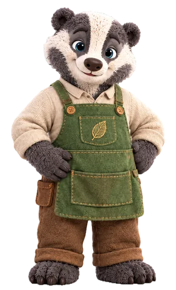
Mr. MossThe classroom helper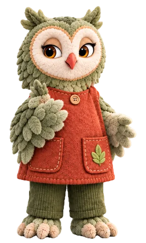
Ms. FernA classroom grown-up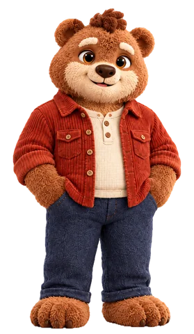
BrunoBooker's parent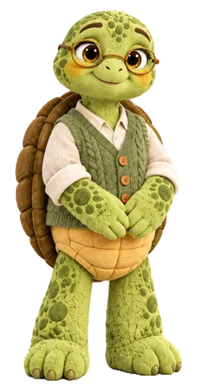
SageZuri's parent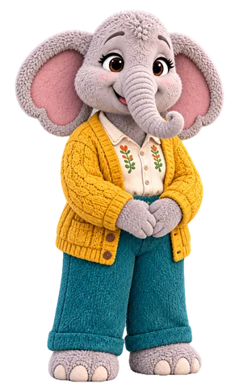
EllaBop's parent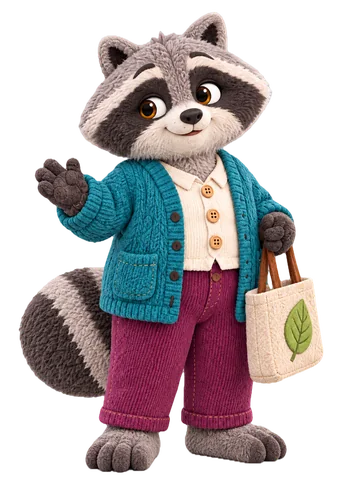
RowanA friendly grown-up at drop-offBookerLearn and SmileLumiBelong and ResetZuriExplore and NourishBopMove and Outside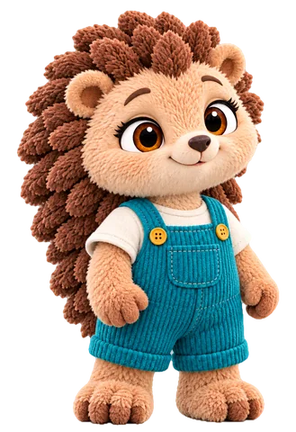
PipThe new friend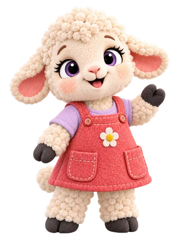
TillyThe imaginative classmate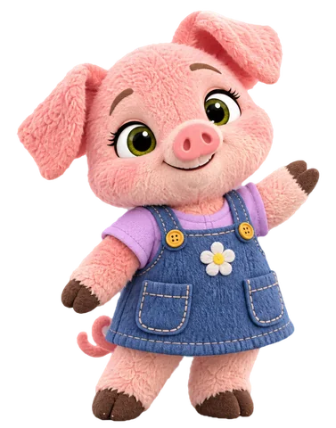
PoppyClassmate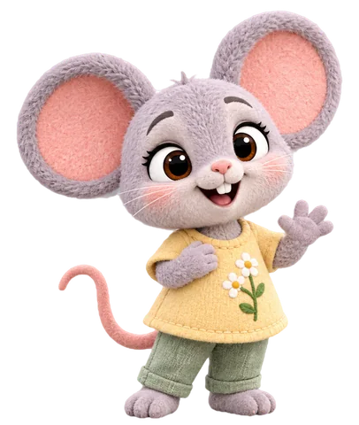
MimiClassmate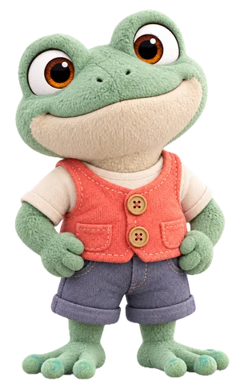
TadClassmateGrown-ups and children are shown at their true heights next to each other. Names and roles beyond the four friends and Ms. June are early story-world proposals.
The four are the stars, but the rest of town has five-minute ideas too.
Pick someone and try theirs.
Ms. June is the teacher who notices the quiet one by the window and asks what he sees. Try her picture-talk circle with Booker.
Supporting-character illustration previews, adapted from the supplied model guides. Everyone in town is a story-world character.
The revised editions of October 2026: each friend's book with its finished story-world art. Tap a cover to read it.
Every word of all five stories is free to read now in Story Time. Printed editions are not available yet.
Picture books for ages 2 to 5, each with a say-along refrain, a Talk About It page and a five-minute activity. Read them free in Story Time; 8.5 by 8.5 inch printed editions are planned.
Booker finds a new book with a word he does not know yet. Lumi helps him look at all four letters of k-i-t-e, where the quiet e helps i say its name, and they read it together. Then Booker welcomes his little sister into story time before she can read.
Lumi notices Pip, the new little hedgehog, standing quietly by the fence during the Parade game. Instead of deciding how Pip feels, she asks. A slow breath helps her feel ready even with a wobbly tummy, and a kind invitation, at Pip's own pace, brightens Pip's day.
An ice cube disappears from the sunny porch, leaving only a puddle. Zuri and her friends make guesses, set up three ice cubes about the same size, and watch closely: ice melts when it gets warm enough, and water freezes when it gets cold enough. No winner, just what they saw, and a brand-new question.
After a big morning of play, Bop sees the biggest mess in the Clubhouse. He starts with one small thing, tries again when the books slide down, lends Zuri a hand (and a trunk), and the whole clean-up team finishes the job together.
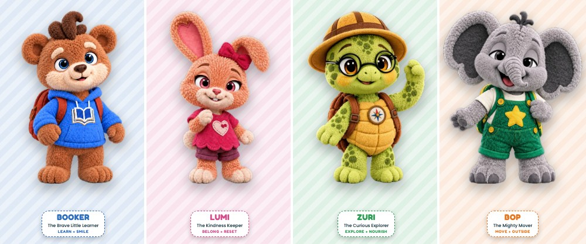
Nana Hoot asks the friends to make a rainbow lunch, one food for every color. Booker reads the recipe, Zuri explores the garden, Bop does the heavy lifting, and Lumi makes room for everyone. When a rain cloud rolls in, they find out what they can do together.
The four friends' books are the revised, illustrated editions (October 2026), read free in Story Time page by page. The Rainbow Picnic's pictures are still a layout, and printed editions are not available yet.
Thirteen short episodes, one a week, each with a talk-about-it card for grown-ups. They are written and outlined in the Futures Friends Series Bible; none has been made yet.
Booker sees the tower wobble and stays quiet. After it tumbles, he says what he noticed and tries his own fix.
Words to use: wide · narrow · steady
Say it together: “I don’t know yet — but I can try.”
Lumi builds a story fort and picks every spot herself. It only works when she asks each friend and waits for the answer.
Words to use: spot · inside · open
Say it together: “Notice. Ask. Listen.”
Zuri tries every ice rescue at once and cannot tell what worked, until she runs one fair test: sun or shade.
Words to use: melt · warm · predict
Say it together: “I wonder… let’s find out!”
Bop cleans the whole room alone, fast, and builds Pile-Mountain. His clap-clap-PUT beat turns cleanup into a team job.
Words to use: sort · pattern · match
Say it together: “I can do it — and we can do it together.” Move Your Body, Grow Your Mind
The last page is missing. Booker un-says every ending he tries, until he picks one and keeps it.
Words to use: rhyme · sound · end
Say it together: “I don’t know yet — but I can try.”
Rain cancels Booker’s Story Walk. Lumi’s Fix-It Menu cannot fix his disappointment, so she stops fixing and stays with him.
Words to use: feeling · disappointed · calm
Say it together: “Notice. Ask. Listen.”
Zuri’s seed will not sprout, so her "help" keeps growing. When she stops to watch and draw, she sees the root grow first.
Words to use: seed · root · sprout
Say it together: “I wonder… let’s find out!”
Bop’s warm-up is too fast to follow. When Rory leads a slow spin, Bop slows his whole body down so everyone can join.
Words to use: first · then · under
Say it together: “I can do it — and we can do it together.” Move Your Body, Grow Your Mind
The friends split up to fill a rainbow snack board and bring back three bananas. Only together, by asking, do they find purple.
Words to use: purple · smell · crunchy
Booker’s book is stuck in his zipped backpack. He refuses help, misses his turn, then asks, "Can you help me, please?"
Words to use: help · stuck · ask
Say it together: “I don’t know yet — but I can try.”
Lumi and Zuri both need the toy crane. Lumi keeps giving in, then grabs. Kindness has to include her own turn too.
Words to use: turn · wait · next
Say it together: “Notice. Ask. Listen.”
Zuri’s shadow vanishes and she pretends to know why. Saying "I don’t know yet" helps her find the cloud, and a new mystery.
Words to use: shadow · light · block
Say it together: “I wonder… let’s find out!”
The friends lead a parade for their families, and every job goes wobbly. Each friend fixes one using another friend’s strength.
Words to use: together · strength · parade
In development, not production-locked. Episode length and the weekly rhythm are still being decided.
Questions about Futures Friends for your program or your family, or about our pilot center in Independence, Missouri? Call or write and we will get back to you.